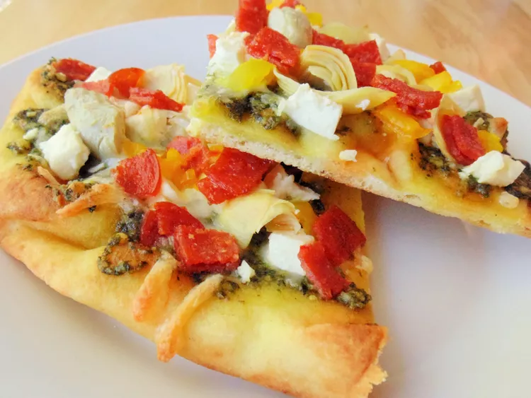

Artichoke, Pesto, and Garlic Naan Bread Pizza

This really simple, unusual and healthier combination of savory flavors is ready in 15 minutes. Just add another slice of naan for a second serving.
Ingredients:
- 1 ½ teaspoons extra-virgin olive oil
- 1 teaspoon pesto sauce
- 1 clove garlic, chopped
- 1 garlic naan bread
- 3 tablespoons shredded mozzarella cheese
- 3 tablespoons feta cheese with Italian spices
- 2 marinated artichoke hearts, chopped, or to taste
- 2 banana peppers, chopped, or more to taste
- 6 slices turkey pepperoni, quartered, or to taste
Steps
- Preheat oven to 375 degrees F (190 degrees C).
- Mix olive oil, pesto, and garlic together in a bowl. Spread over naan bread. Top with mozzarella cheese and feta cheese. Scatter artichoke hearts, banana peppers, and turkey pepperoni on top.
- Bake in the preheated oven until cheese is melted, 7 to 9 minutes.